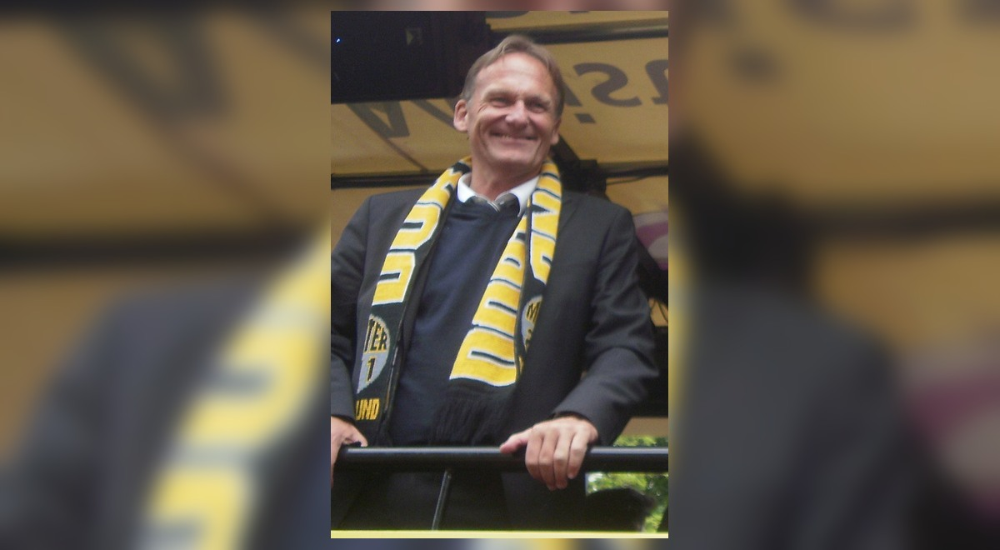

Dortmund und Bayern üben sich in Psychospielchen

Düsseldorf. Im Fernduell mit den Münchnern um die Meisterschaft redet sich der BVB stark. Er beansprucht die Position des Teams, das alles zu gewinnen hat. Die Bayern antworten mit selbstbewussten Tönen.
Mitte der Woche beschlich Hans-Joachim Watzke „ein unerklärliches Gefühl“. Zuletzt hat ihm so etwas vermutlich in der Pubertät ereilt, als er wie alle Jungs zwischen 13 und 16 nicht so recht wusste, wohin mit sich. Aber mittlerweile weiß der 59-jährige Geschäftsführer von Borussia Dortmund das ganz genau.
Die Psychospielchen zwischen den beiden seit langem führenden deutschen Klubs wurden schon mal mit größeren Werkzeugen ausgetragen. Heute wie gestern ist Watzke in Dortmund aber der Mann, der den Ton angibt. Er schwört die fußballspielende Belegschaft auf große Ziele ein und erinnert daran, dass im Fußball manchmal auch kleine Nuancen zählen.
Der Geschäftsführer will seinem Team vermitteln, dass es bei zwei Punkten Rückstand und dem 17. Treffer schlechteren Torverhältnis beim letzten Saisonspiel in Mönchengladbach nichts zu verlieren, dafür alles zu gewinnen hat. Entspannt möge die Mannschaft ins Spiel gehen, wünscht sich der Taktiker Watzke.
Ganz sicher aber dient die Veröffentlichung seiner Befindlichkeit in erster Linie einem Zweck: Sie soll den großen Gegner kurz vor dem Ziel verunsichern. Er soll den Druck spüren, etwas ganz Großes doch noch verlieren zu können.
Das wissen wiederum die Münchner. Und sie reagieren ihrerseits mit Wortbeiträgen aus der „Mia san mia“-Schule. Vorweg geht dabei Thomas Müller, der die Regeln des Mia san mia auch am längsten kennt. „Wir wollen im eigenen Stadion von Anfang an zeigen, dass nur wir Meister werden wollen“, sagte der Stürmer.
Ihn berührt die Situation im Saison-Endspurt am stärksten. Denn er hat es nicht nur mit Gegnern in Dortmund zu tun, die aus der Ferne an den Münchner Nerven knabbern, sondern auch mit seinem alten Verein Eintracht Frankfurt.
Die Führung vermeidet kurzfristig jedes Bekenntnis zum Trainer. Unbehaglich wird von angeblichen Unstimmigkeiten zwischen Kovac und Teilen der Mannschaft gemunkelt. Das Internetportal „Spox“ meldete am Freitag bereits die Absprache über die Ablösung des Trainers im Sommer.
Kovac kann das nicht gefallen. Und er hat diese Woche ein wenig in sein Herz schauen lassen. „Ich habe gemerkt, wie schwierig es ist. Mensch zu bleiben“, sagte er, „wir müssen den Menschen sehen, nicht immer draufhauen. Wenn wir miteinander reden, müssen wir eine gewisse Ebene haben, die nie unterschritten werden darf.“